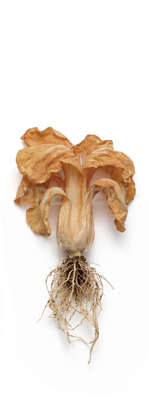

|  | ||||||||||
| BBCH Stage | 00–09 | 10–19 | 20–29 | 30–39 | 40–49 | 51–59 | 60–69 | 70–79 | 80–89 | 90–99 |
| Description | Dry seed, imbibition, radicle emergence | Cotyledon emergence, seedling growth | True leaf unfolding, leaf expansion | Rosette or head formation | Leaves reach harvestable size | Bolting, flower stalk elongation | Flowering, anthesis | Seed development | Seed ripening, drying | Plant senescence |
| Your Product | Add product name & dosage | Add product name & dosage | Add product name & dosage | Add product name & dosage | Add product name & dosage | Add product name & dosage | Add product name & dosage | Add product name & dosage | Add product name & dosage | Add product name & dosage |